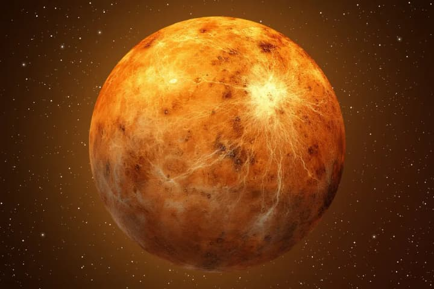
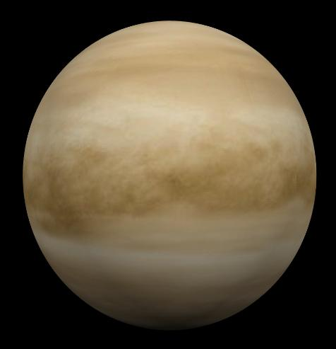
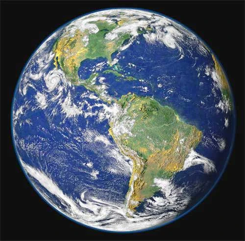
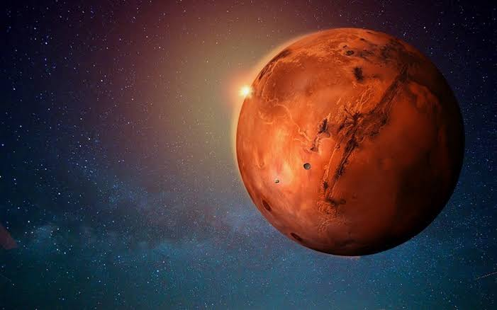

🪐 Планети земної групи
Познайомся з чотирма планетами, які розташовані найближче до Сонця!
☿ Меркурій

Меркурій — найменша планета Сонячної системи та найближча до Сонця.
Його поверхня вкрита кратерами, схожими на місячні.
Цікаві факти:
- Меркурій є найменшою планетою Сонячної системи.
- На планеті майже немає атмосфери.
- Рік на Меркурії триває лише 88 земних днів.
♀ Венера

Венера — друга планета від Сонця. Вона має густу атмосферу,
яка утримує тепло, тому її поверхня дуже гаряча.
Цікаві факти:
- Венера є найгарячішою планетою Сонячної системи.
- Вона обертається навколо своєї осі в протилежному напрямку від більшості планет.
- Венеру можна побачити на небі як яскраву зорю, хоча вона не є зорею.
🌍 Земля

Земля — третя планета від Сонця. На ній є вода, повітря
та умови, необхідні для існування життя.
Цікаві факти:
- Земля — єдина відома планета, на якій існує життя.
- Близько 71% поверхні Землі вкрито водою.
- Земля має один природний супутник — Місяць.
♂ Марс

Марс — четверта планета від Сонця. Його називають Червоною планетою
через колір поверхні, яка містить багато заліза.
Цікаві факти:
- На Марсі є найвища гора Сонячної системи — вулкан Олімп.
- На планеті є долини, кратери та сліди давніх річок.
- Марс має два природні супутники — Фобос і Деймос.